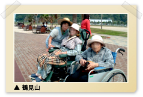
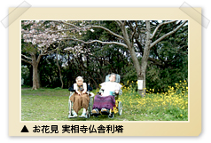
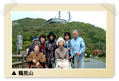
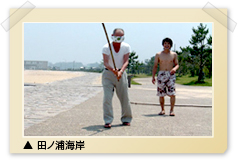

|

|
 |
はぴね別府亀川
http://www.happine-carelink.net/beppukamegawa/event.html
|
 |
 はじめに はじめに
Ｍ様は、平成10年ALSの診断を受け、その後、御本人の病状の進行と共に御家族様の介護疲れも重なり徐々に在宅では介護が無理な状態になってきました。
少しでもご家庭に近い環境で介護を提供したいと言うご家族の思いがあり、当施設への入居を希望されました。
定員36名三つのユニットからなる介護付き有料老人ホームで高齢者の方に安心して充実した住まいの環境を提供したいというそんな想いから全国に『はぴね』を展開いたしております。
ただその中にも、呼吸器装着の方を受け入れた例はなく、すべてが一からと言う状態でした。
まず受け入れ経過についてご説明いたします
受け入れを了解し 看護師の２４時間体制について施設内で検討を開始しました。
平成17年1１月に広域病院で、ご家族様をはじめ医療関係者の方々や難病医療連携室のA様のご参加を頂き在宅療養支援会議を行い、今後の方向性について協議いたしました。
その後３回にわたりM様を訪問し、コミュニケーションを図りながら援助の方法を情報収集しました。
平成17年12月初旬に広域病院より市内病院に転院され、私共が介助方法や呼吸器の管理方法について研修をうけました。
平成17年12月下旬に市内病院を退院されご入居となりました。
最後に受け入れてから現在までの経過ですが
まず、入居後２週間は実際に在宅で呼吸器装着の方の看護経験のある訪問看護を受け指導していただき、病院からは週一の訪問診療にて気管カニューレの交換・回路の交換・状態観察をして頂いただきました。
そのほかに、日中夜間を問わず呼吸器のことやご本人の状態などについて相談をしました。
|
一日の過ごし方
| 8:00 |
呼吸器の除去・モーニングケア後朝食 （籐の椅子に座り） |
| 10:00 |
ティータイム |
| 10:30 |
ネブライザー吸入・吸引・カフ圧のチェック |
| 12:00 |
昼食 |
| 13：30～14：00 |
ベットに上がり呼吸器を装着して午睡 |
| 16:30 |
呼吸器を除去して夕食までの準備 |
| 17:30 |
夕食 |
| 18:30 |
カフ圧のチェック |
| 20:00 |
水分補給 |
| 20：30～21：00 |
就寝（呼吸器の装着） 体位変換 排泄介助 |
|
外出レクへの参加
翌年の春からは 月に２回くらいの外出レクレーションに参加されています。
| 平成18年4月 |
実相寺へお花見 |
 |
| はぴね屋上にてご家族と焼肉パーティ |
| 平成18年5月 |
鶴見岳ロープウェイに藤棚を見学 |
 |
| 自宅へ |
| 平成18年6月 |
田ノ浦ビーチへ |
 |
| 平成18年7月 |
武蔵の海岸・空港へドライブ |
| 平成18年8月 |
屋上で亀川花火大会を観賞 |
| 平成18年10月 |
明礬へドライブ |
ご入居いただいて、ネットワーク・医療の支援体制は不可欠だとあらためて実感いたしました。
残された限りある時間を、有意義に楽しく過ごしていただけるように今後も心をこめて介護させていただきます。
|
|